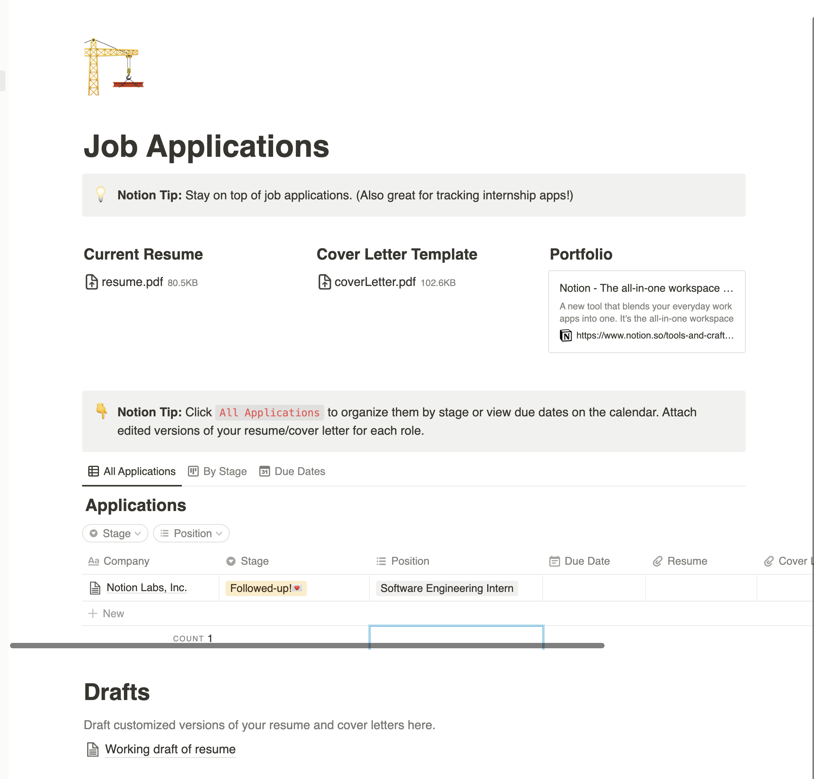
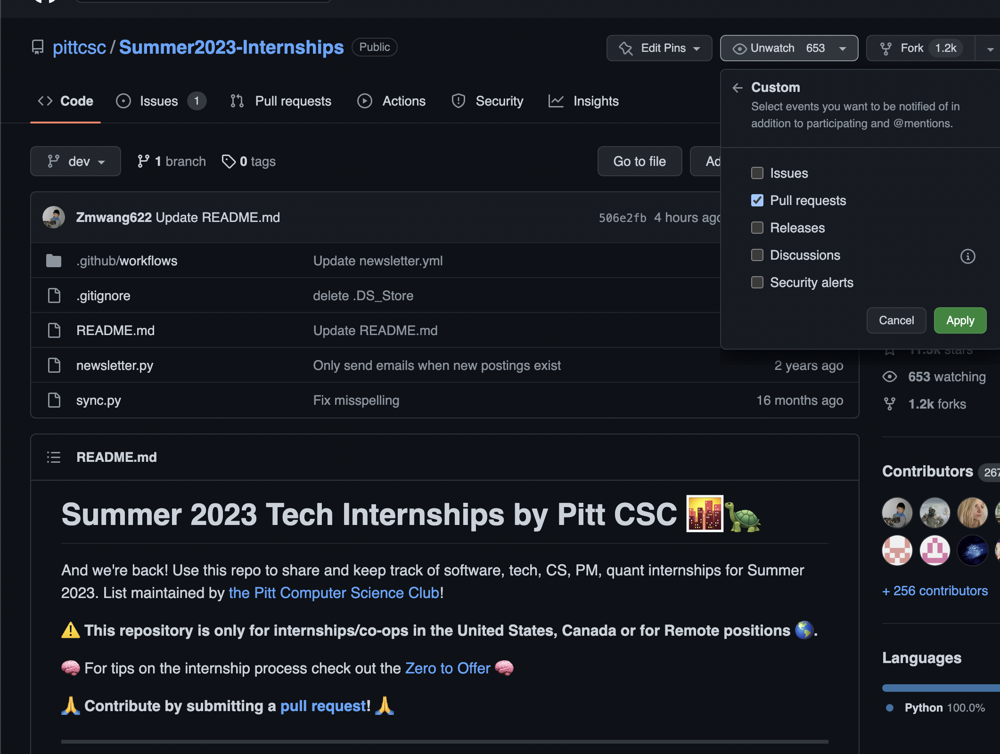
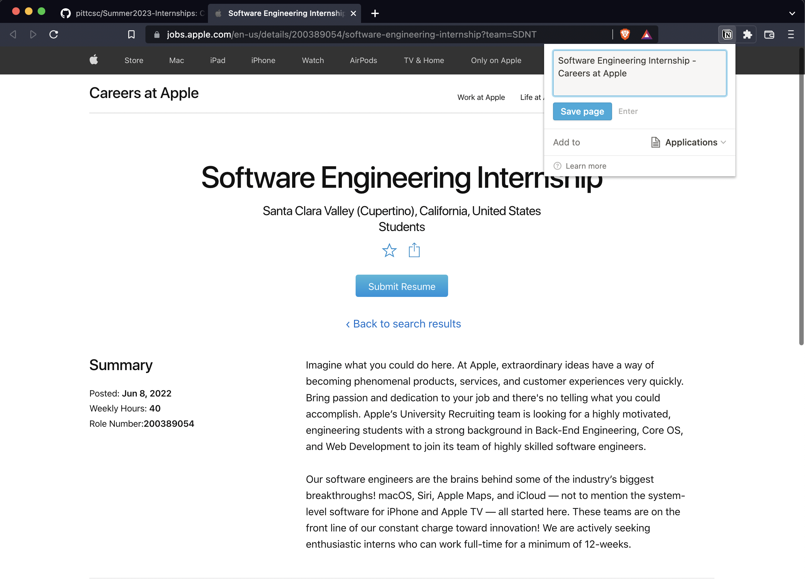
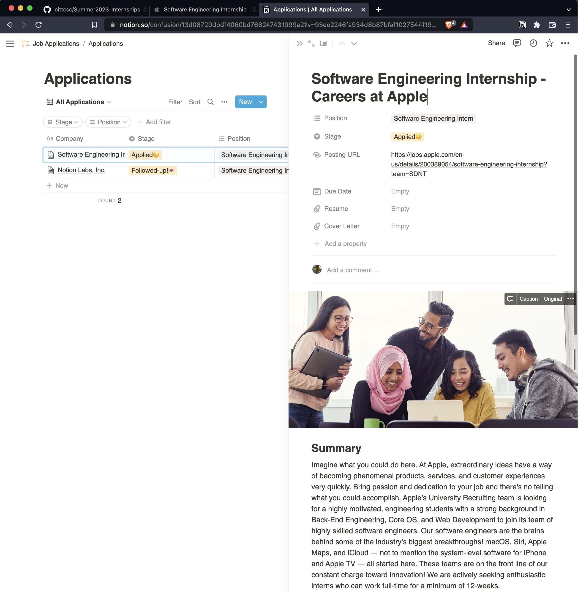

How I organize my intern application?
Following last year internship application experience, all the records were messy, unorginzed. It's all due to the fact that I haven’t used any tool to manage them, I just used gmail search bar to find the history, see if I have applied to the company. This year I tried somethings a little bit different, I developed a system helping me to keep track of all the application by companies and date.
First thanks for Notion to provide this wonderful no-code database, to make my work of organizing application much eaiser. And the setup is very simple, there’s only two things you will need, to built the system: Notion, and Notion web clipper.
Notion(free upgrade for full-time students): link
Template I used: link
Notion web clipper: link
Once you have installed Notion, notion web clipper, and added the template. You should get a page like this. You can add position, and stage to the field as you needed.
Now, you have setup the system, we can move to do intern job hunting!
There are few popular site where you can find interns opening, like Linkedin, Indeed or Angellist, but this time I want to introduce a GitHub repo which specially made for students internship.
Repo:link
One tip I want to add, to save your time on looking for new opening is adding “watch”-> “custom”->”Pull requests”, so you can receive the latest update from your email.
Lets work on an example, from my favorite company Apple, which I have used their phone since I got my first smartphone. Their product eco-system is amazing! When you have arrived to the job description, you can use the web clipper to the save the page info into the notion database you just created.
The reason why I said organizing your job application is important is the company might take off the job post before you go to the interview. If you want to go back to remember some of the information, the content you saved on Notion will save you from the interview. Also you can set up date and reminder on Notion, to remind you when to check-in with recruiter for the application process.
Lastly, I know this year will be a harder time to get an intern to all of us due to economic downturn, and hiring freeze. So I would encourage you to apply more companies as you can, to increase the odd of getting an intern. Hope you will all succeed in landing an summer intern! If you don’t get one at the end, try not to be discourage! And you can work on a personal project, go to coding contest, or networking, as they will all help you advancing your career.